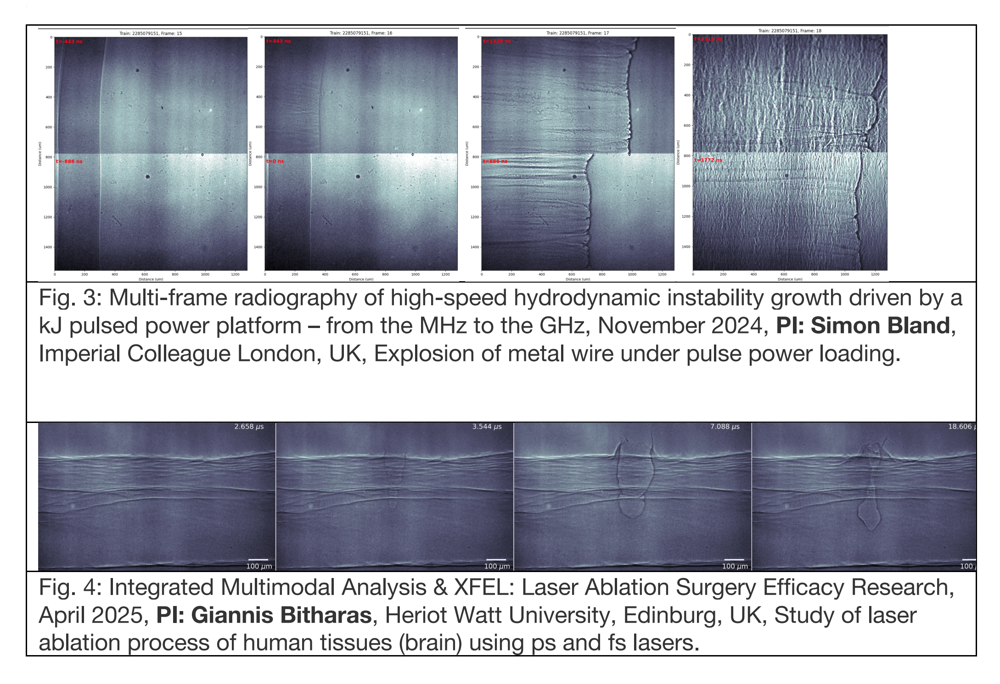

Our mission is to push boundaries of advanced X-ray pulse resolved imaging at large scale X-ray infrastructures
We have pioneered this field through: - Early proof-of-principle MHz radiography with phase contrast (XPCI) experiments at ESRF ID19 [1]. - Development of MHz X-ray radiography with phase contrast at the European XFEL [2,3], which was used for several inhouse and user beamtimes [4,5,6] at European XFEL. - User/collaborators campaigns in materials research and biomedical applications, including imaging of processes in human tissues under focused ultrasound. - Several new beamtime applications (9 proposals) submitted to EuXFEL out of that 2 for high resolution MHz XPCI/holography and 7 for MHz Tomoscopy including fusion research application. Examples (to be published) of MHz radiography performed in a pulse-synchronized manner at a 1.128 MHz frame rate (current camera limitation), recently conducted at EuXFEL. The field of view was 1.28 mm × 0.8 mm with an effective pixel size of 3.2 µm.

In parallel, we have proposed various splitting [7, 8] schemes explored via RÅC InVision project and we invented practical multi-beam X-ray (not limited to) splitting scheme, which has been patented with DESY, EuXFEL and Tohoku University (Japan) as assignees [9]. Based on this idea we obtained EIC-Pathfinder Open project “MHz Tomoscopy”. The first successful feasibility tests with two projections has been performed at European XFEL [10] and ESRF ID19 [11] and through EIC Pathfinder MHz Tomoscopy funding, we recently constructed and validated a MHz multi-view imaging prototype for vertical scattering geometry with four simultaneous projections (limited by budget). Recent tests of the prototype at European XFEL and ID19 confirmed that Tomoscopy can be performe
New Developments
To extend these capabilities, we are advancing highly sensitive detection concepts using Bragg Magnifiers (BM) combined with integrating detectors. - Feasibility tests of pulse-resolved X-ray holography with BM at both the European XFEL and LCLS have demonstrated large improvements in dynamic range, enabling high-fidelity imaging. - We are developing a prototype BM module for integration into MHz tomoscopy setups using available funding. For full scale implementation external funding is being searched and applied. This approach will enable: - Split-and-delay imaging: BM used as an optical delay line, enabling sampling in the 50–200 ps regime at XFELs. Innovation disclosure submitted to DESY ITT 2024. - High-efficiency synchrotron detection: BM combined with direct detectors provides two orders higher detection efficiency compared to conventional indirect detectors. Sampling rates of 1–10 kHz are feasible with scintillator-based detection while with proposed approach can reach ~100kHz sampling range two orders higher than any fast tomography.

Implementation at P25 White Beam Hutch
The P25 beamline offers a unique environment for realizing next-generation synchrotronbased ultrafast imaging. Our implementation strategy is structured in three steps:
• Step 1: Feasibility tests
• - Demonstrate multi-projection tomoscopy and MHz phase-contrast radiography
using available equipment.
• - Install essential infrastructure in the hutch, including timing and synchronization
signals and fast/slow shutters to enable bunch-resolved operation.
• Step 2: Dedicated implementation
• - Multi-projection tomoscopy: Integration of 4–8 high-speed CMOS detectors (1 kHz
– 500 kHz sampling rate, ~40 k€ each).
• - MHz radiography: Installation of one or two Shimadzu HPV-X3 detectors (~350 k€
each) to enable MHz-resolved single-shot imaging at synchrotron repetition rates.
• Step 3: Validation on real systems
• Apply the developed platform to imaging of selected dynamic processes, including:
• Additive manufacturing (3D printing)
• Laser ablation and shock phenomena
• Acoustic wave interactions with biological tissues
• Propagation of water through porous media (applications of the Bluemat
consortium)
• Other representative ultrafast stochastic events
Through this staged approach, PETRA P25 will establish MHz radiography with phase
contrast (propagation and differential modes) and kHz-sampled multi-projection
tomoscopy, progressing from feasibility to full implementation and validation in
scientifically and technologically relevant applications.
Road map Summary
| Step | Objesctive | Equipment/Infrastructure | Estimated Cost | Expect Outcome |
|---|---|---|---|---|
| 1.Feasibility test | Demonstrate MHx radiograpghy & projection tomoscopy with existing resources | Timing & synchronization signals Fast and slow shutters | Minimal (infrastructure only) | Proof-of-principle MHz & radiography at P25 |
| 2.Dedicated Implematntation | Establish high-speed imaging capability | 4-8 CMOS detectors (1-500kHz, ~40k each) 1-2 Shimadzu: HPV-X3 detectors (~350k€ each) | CMOS: 160-320k€ Shimadzu: 350-700k€ | Fully operational MHz radiography & kHz-sampled tomoscopy |
| 3.Validation on real systems | Apply methods to scientific and industrially relevant cases | Imaging of additive manufacturing, laser ablation, acoustic wave-tissue interactions Water transport in porous media (Bluemat consortium) | No major new costs beyond Step 2 | Demonstration of high-impact applications establish P25 as a unique platform for ultrafast 4D synchrotron imaging |
*More precise cost are being evaluated.